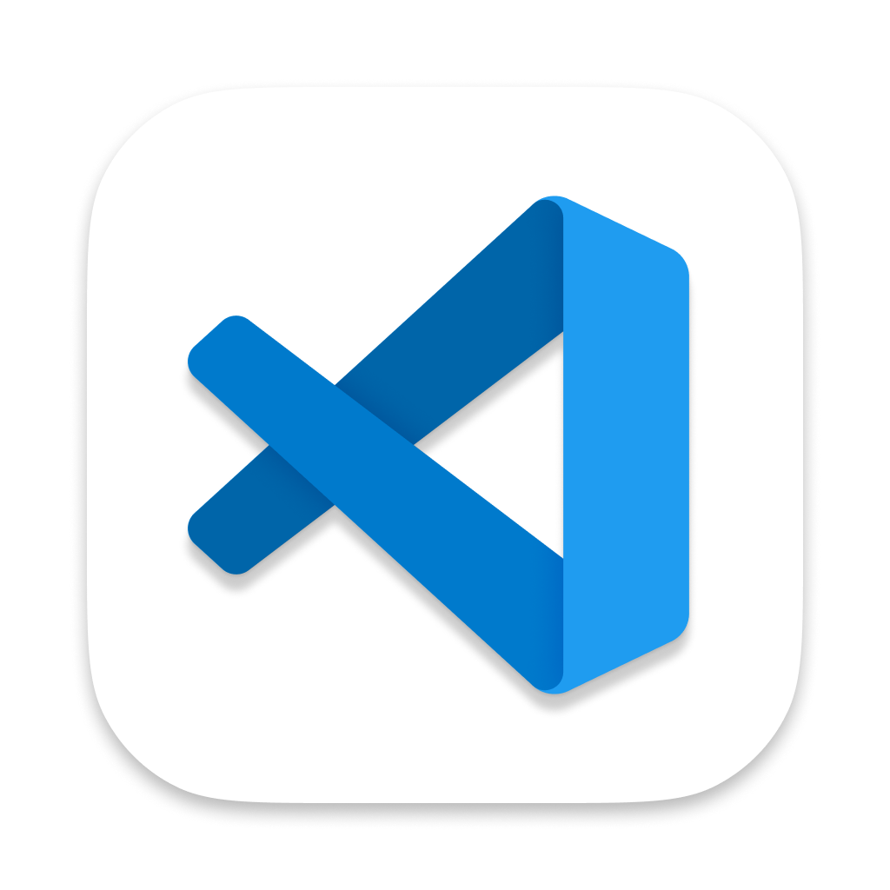

Les métriques de votre Mac,
sur une seule ligne.
CPU, GPU, RAM, réseau — l’essentiel vit dans votre barre des menus. Un survol suffit pour voir quel app fait travailler votre Mac, sans ouvrir le moindre dashboard.
Voyez ce que fait votre Mac, en un coup d’œil.
Une courbe d’activité compacte, posée dans la barre des menus. Chaque pic porte le nom de l’app qui l’a provoqué.
Courbe en temps réel
L’activité du système dessinée en continu, lisible même en coin d’écran.
Les coupables nommés
VS Code compile, Chrome s’emballe : les apps dominantes s’affichent sur leurs propres pics.
Zéro dashboard
Pas de fenêtre à ouvrir, pas de widget à surveiller. La barre des menus suffit.

Le contrôle sans interrompre votre travail.
Survolez la barre : le panneau révèle les processus gourmands et les actions utiles. Reprenez là où vous étiez, deux secondes plus tard.
Processus gourmands identifiés
Les apps qui consomment, classées, avec le contexte qu’il faut pour décider.
Quitter sans changer d’app
Une app s’emballe ? Quittez-la directement depuis le panneau.
Conseiller IA optionnel
Un audit intelligent de l’état du système, uniquement si vous le demandez.

Composez une barre des menus qui vous ressemble.
Jauges placées et colorées à votre goût, icônes secondaires rangées dans une seconde barre façon Bartender : vous gardez l’accès, sans l’encombrement.
Tout est configurable
CPU, GPU, RAM, disque, réseau : choisissez les jauges, leurs couleurs, leur ordre.
Seconde barre intégrée
Les icônes rares se replient, l’essentiel reste visible.
Discret au repos, clair à l’usage
Compact quand tout va bien, bavard au moment où ça compte.

Gratuit aujourd’hui, gratuit demain.
Pas de compte, pas d’abonnement, pas de version pro. Un DMG, un cask Homebrew, et c’est installé.
- Toutes les fonctionnalités, sans exception
- Open source — code lisible et modifiable
- macOS 13+, Intel et Apple Silicon
- Aucune donnée collectée, tout reste local
- Mises à jour via GitHub Releases
brew install --cask mondary/tap/pkmonitorcurl -L -o PKMonitor.dmg https://github.com/mondary/PKmonitor/releases/latest/download/PKMonitor-2026.09.34.dmgbrew upgrade --cask pkmonitorOu parcourez toutes les releases sur GitHub ↗
Questions fréquentes
PKMonitor est-il vraiment gratuit ?
Oui, entièrement. Le code est open source sous licence MIT, le DMG est sur GitHub Releases, et il n’existe aucune version payante ni aucun compte à créer. Voir le code source ↗
Quelles sont les configurations requises ?
macOS 13 Ventura ou plus récent, sur Mac Intel comme Apple Silicon. L’app est légère et tourne en arrière-plan sans solliciter la machine qu’elle surveille.
Mes données quittent-elles mon Mac ?
Non. PKMonitor fonctionne entièrement en local. Le conseiller IA est optionnel : aucune requête n’est envoyée avant votre action explicite, et votre clé API reste dans le Trousseau macOS.
Comment installer l’application ?
Trois chemins : glisser-déposer depuis le DMG, brew install --cask mondary/tap/pkmonitor, ou la commande curl de la section téléchargement. Aucun redémarrage nécessaire.
Comment mettre à jour ?
Avec Homebrew : brew upgrade --cask pkmonitor. Sinon, re-téléchargez le DMG de la dernière release et remplacez l’app — vos réglages sont conservés.
La sparkline ralentit-elle le Mac ?
Non. La surveillance repose sur les API système natives et un rafraîchissement raisonné : quelques points de CPU au repos, rien de perceptible en usage normal.
Puis-je proposer des améliorations ?
Bienvenue : ouvrez une issue ou une pull request sur le dépôt GitHub. Vous pouvez aussi soutenir le projet sur Ko-fi.
Un Mac plus calme commence ici.
Installez PKMonitor en quelques secondes. Gratuit, open source, fait pour macOS.